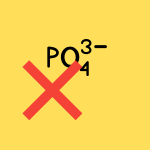

Score: 0 / 0
Nucleotides & Nucleosides
-
Nucleotides are the building blocks of nucleic acids (DNA and RNA. and
consist of a nitrogenous base, a sugar (ribose or deoxyribosE., and
one or more phosphate groups.
-
Nucleosides are similar to nucleotides but lack the phosphate group.

-
The sugar-phosphate backbone of nucleic acids is formed by
phosphodiester
linkages between the 3' hydroxyl group of one sugar and the 5'
phosphate group of the next sugar.
-
Nitrogenous bases can be classified as purines (adenine and guanine.or
pyrimidines (cytosine, uracil, and thyminE..
.png)
-
Purines have a two-ring structure, while pyrimidines have a single-ring structure.
-
The sequence of nitrogenous bases in nucleic acids encodes genetic
information, with specific base pairing rules (A-T and G-C in DNA; A-U and G-C in RNA..
-
GC bonds are the strongest base pairs due to three hydrogen bonds.
-
Nucleotides include DNA, RNA, ATP (involves energy transfer), and cAMP (involved in signaling), each serving different roles in cellular processes.
.png)
-
DNA functions to store and transmit genetic information, while RNA plays roles in protein synthesis and regulation.
Practice Questions
Which of the following base pair would be hardest to break apart? Type the letter of the answer: G-C
A. A-T
B. A-U
C. G-C
D. C-G
Which of the following describes the sugar-phosphate backbone of nucleic acids? Type the letter of the answer: A
A. It is formed by phosphodiester linkages between nucleotides, connecting the 3' hydroxyl group of one sugar to the 5' phosphate group of the next sugar.
B. It is formed by phosphodiester linkages between nucleotides, connecting the 5' hydroxyl group of one sugar to the 3' phosphate group of the next sugar.
C. It is formed by hydrogen bonds between nucleotides, connecting the 3' hydroxyl group of one sugar to the 5' phosphate group of the next sugar.
D. It is formed by hydrogen bonds between nucleotides, connecting the 3' hydroxyl group of one sugar to the 5' phosphate group of the next sugar.
What is the primary difference between a nucleotide and a nucleoside? Type the letter of the answer: D
A. Nucleotides contain a sugar, while nucleosides do not.
B. Nucleotides contain a nitrogenous base, while nucleosides do not.
C. Nucleotides contain a base-pair hydrogen bond, while nucleosides do not.
D. Nucleotides co
ntain a phosphate group, while nucleosides do not.
Which of the following is not a nucleotide? Type the letter of the answer: D
A. Adenosine triphosphate (ATP)
B. Guanosine triphosphate (GTP)
C. RNA (ribonucleic aciD.
D. Deoxythymidine